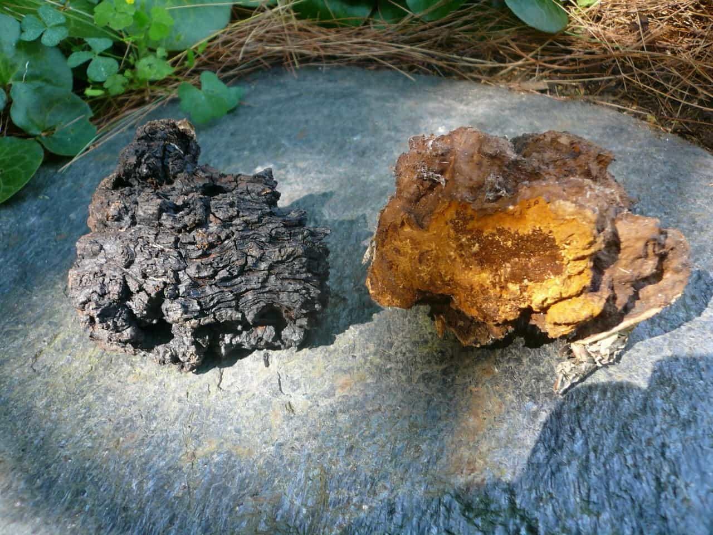

The following article was sponsored by Alaska Chaga.
Many men drink green tea or other types of tea for health reasons or just as a refreshing beverage. Alaska chaga tea is a tea that you should strongly consider adding to your diet for its numerous health benefits. Created from chaga mushrooms that naturally grow on birch trees in Alaska, chaga tea has been used for centuries as a folk remedy for numerous ailments due to its nutrient-rich nature. Here are some of the benefits of drinking Alaska chaga tea.
1. Antioxidants

Chaga Mushrooms -The Diamond of the Forest – with their All Important Black Crust
Alaska chaga tea is rich in antioxidants, molecules that stop the oxidation of other molecules. Antioxidants are used to eliminate free radicals from the body, which improves overall health and reduces the likelihood of developing cancer. It also slows down aging and prevents long-term cellular damage.
2. Improved Immune Health
If They Knew about Chaga in WW2, The War Would Have Been Won by 1942
Alaska chaga tea is also notable for containing a large variety of sterols, from botulin, lanosterol, ergosterol peroxide, and many more. Sterols are naturally occurring molecules that promote healthy cell division and growth. For example, inotodiol has been shown to enhance cell division and immune system function, as well as inflammation response, as does ergosterol peroxide.
Chaga is also notable for containing betulinic acid, a sterol that is vital for cell health. The betulinic acid found in Alaska chaga is superior to the betulin found in other staple foods of the human diet due to its greater bioavailability, which comes from the fact that chaga mushrooms extract betulin from birch trees and turn it into betulinic acid. Like the previously mentioned sterols, betulinic acid is vital in aiding cell division, immune health, and inflammation response.
Polysaccharides are another beneficial substance that is found in abundance in Alaska chaga. Polysaccharides are naturally-occurring molecules that have been scientifically shown to improve digestive and immune health. Combined with the immune-boosting effects of many sterols, Alaska chaga tea can act as a strong boost to your immune system, protecting you from disease.
Finally, Alaska chaga is also rich in beta-glucans, a substance that has also been shown to improve immune health. Chaga tea has been used for centuries as a means to ward off illness, and the presence of all these nutrients in chaga is why. If you want a healthier immune system, Alaska chaga tea is a very good addition to your diet.
3. Stress Reduction
Most people these days are under a large amount of stress due to their jobs, their families, or a myriad of other factors. Excessive amounts of stress have been shown to have adverse effects on human health, from increasing the likelihood of getting sick to shortening one’s lifespan. If you want to live a long, healthy life, you need to mitigate the effects of stress on your body as much as possible.
Alaska chaga tea is loaded with adaptogens, organic substances that have been scientifically shown to reduce the effects of stress on human health. Adaptogens aid stress response by allowing your body to remain balanced and healthy, making it less likely that stress will make you sick or have other adverse health effects. More importantly, adaptogens have been shown to increase physical and mental energy over time, making you more capable of taking on the day’s challenges.
4. General Health
In addition to more esoteric ingredients, Alaska chaga tea is loaded with many vitamins and minerals necessary for good health, from vitamins A, B complex, C, D, E, and K to zinc, calcium, iron, and more. In addition to improving immune system health, chaga tea is also good for your liver and heart, helping you stay healthy in every way that matters.
The Alaska Chaga Difference
Masculine Men Drink Chaga
While chaga mushrooms are native to large swaths of Eurasia and North America, chaga found in warmer climates lacks the nutritional content found in more northern areas. Only chaga harvested in cold regions such as Alaska contains the necessary quantities of nutrients, vitamins, adaptogens, and other substances that make it a nutritious and worthwhile drink.
Alaska chaga is typically sold in chunks, powder, or tea bags, allowing you to make tea in whatever form you prefer. It can be brewed as a warm drink for cold winter days or refrigerated as ice tea for hot, sweltering summer ones. Not only that, Alaska Chaga’s chaga products are free of artificial additives such as caffeine, gluten, preservatives, and other junk content that would otherwise blunt its positive qualities. Its lack of caffeine means that individuals who are sensitive to it will enjoy chaga tea as a refreshing alternative.
Finally, Alaska Chaga is a family-owned business that supports traditional masculinity and values. When you buy chaga from Alaska Chaga, you’re supporting a small business that celebrates the virtues that made America—and Western civilization—great.
The Importance of Your Health
It may be a cliché, but it’s the truth: you get only one body and one life. You owe it to yourself and your loved ones to take care of yourself as best you can, and part of this is consuming products that provide nutrition to your body. Drinking soy-filled lattes and sugar-filled energy drinks will only hurt your health in the long run.
Alaska chaga tea is one of the easiest ways to balance and improve your personal health. The amount of benefits that chaga tea carries, from improved heart and immune health to healthy cell division and natural stress reduction, make it one of the easiest ways you can protect your body, and it’s a tasty drink as well. Even better, Alaska chaga tea is inexpensive, costing less than a dollar per cup.
In short, you can’t afford to be cavalier with your health, particularly when you have people who depend on you. Alaska chaga tea is one of the simplest ways you can improve your health, whether you want to reduce your chances of getting sick or lower the impact of stress on your body. If you’re a health-conscious man, you owe it to yourself to give Alaska Chaga a try. Click here to visit the Alaska Chaga store.
Advertise Your Product Or Site On Return Of Kings